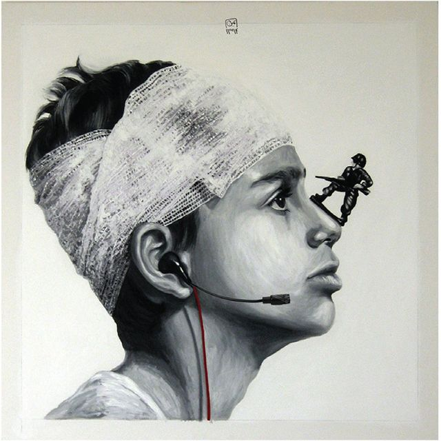
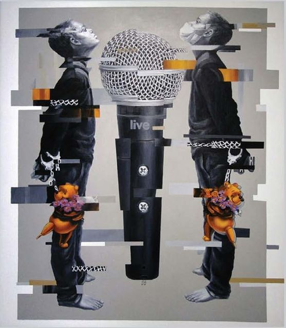
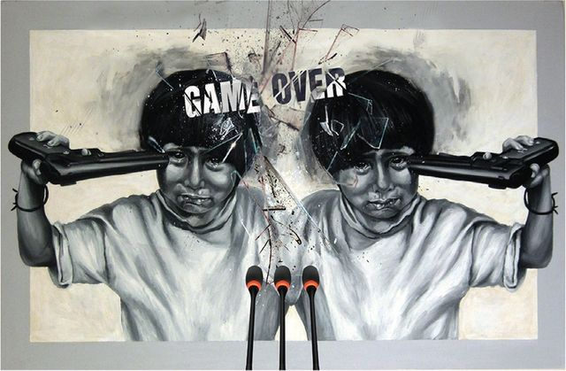
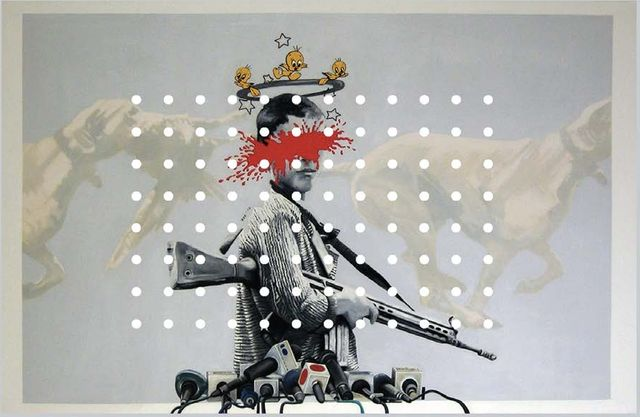
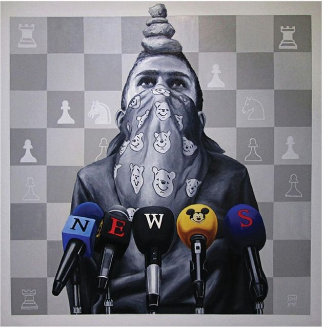
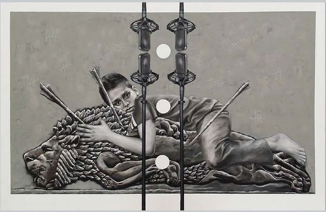
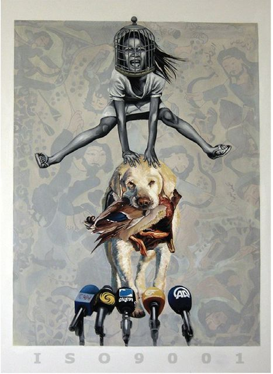
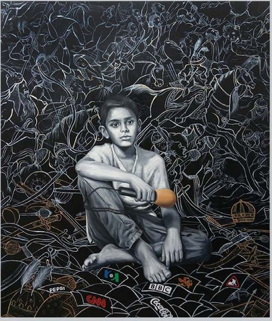

StatementAbout the work
Silent Dialogues
Silent Dialogues is a collection which may not be remained unheard. The reflection of situation imaged in report and silent dialogues shows the children appeared in a dictated and destructive role as a perfection-finding creature. A question engaged to my mind as a female artist is whether the mother of such children is contemporary press or reasonable thoughts?
The important point is that they are appeared against a social arisen or self-arisen question and report in a regional view with an international reflection, and align an obvious distinguishing they are enclosed therein with some incomplete questions and damaged answers.
Each work of this collection narrates an abstract imagination in a report-like expression; a narration-oriented reproduction of the children watching, astonished and nameless, doubtless, in a still background, what kind of their imagination will appear in the thought of their audience; although they don't have any compatibility with their audience world. I want you to stand for such works twice and ask them or listen so that you narrate this report, and see what Silent Dialogue sounds louder and softer, and we shout the reproduction of what ignorance explicitly
Maryam Namin
Works9 artworks

















History of experienceBiography · education · exhibitions · awards
Solo Exhibition
- 2013Mehrin Gallery
- 2012Aseman Gallery
- 2012narvan Gallery
- 2011Atbin Gallery
- 2011Aseman Gallery
- 2011Atbin Gallery
- 2010Siavashan Gallery
- 2009Atbin Gallery
- 2005Baran Gallery
- 2005Mirek Gallery
- 2004Seyhoun Gallery
- 2001Mirek Gallery
Group Exhibitions
- 2015Siavashan Gallery
- 2015Exhibion in support of cancer patients, Azarnoor Gallery
- 2015Toranj Gallery|Shiraz – Iran
- 2014Pop-up gallery, Emirates palace. Abu Dhabi
- 2014Dubai Make Business Hub JBR
- 2013Cultural Center of Gorgan
- 2013Participation in the Festival of Resistance of Iran
- 2012The Biennial of Contemporary Painting|Saba Cultural Center
- 2012Dey Group, Artin Gallery
- 2012Dey Group, Museum of Contemporary Arts|Ahvaz – Iran
- 2011Dey Group, Museum of Contemporary Arts|Isfahan – Iran
- 2011Dey Group, Aseman Gallery
- 2011Group 14, Aseman Gallery
- 201192 Group, Aseman Gallery
- 2010Exhibition of Arts, Saba Art Cultural Institute
- 2010Banouk Group, Mirek Gallery
- 2009Banouk Group, Cultural Heritage
- 2006The Islamic Republic of Iran's Cultural Embassy|Turkmenistan
- And also interviews with TV Channels and Participate in Jam e Jam channel and etc...
- Also first National Congress of the visual arts messenger|Tehran, Iran
Source: the Sobhan Gallery artist catalogue “Maryam Namin.pdf”.